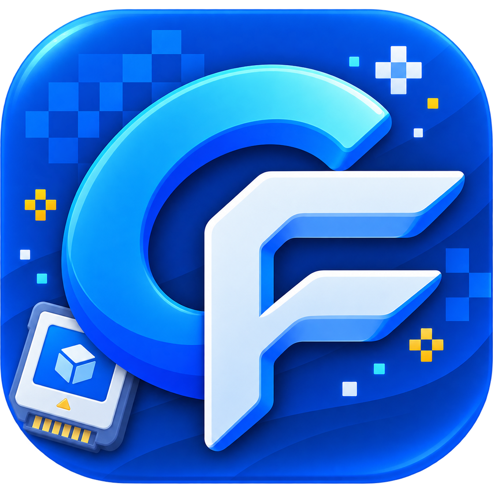
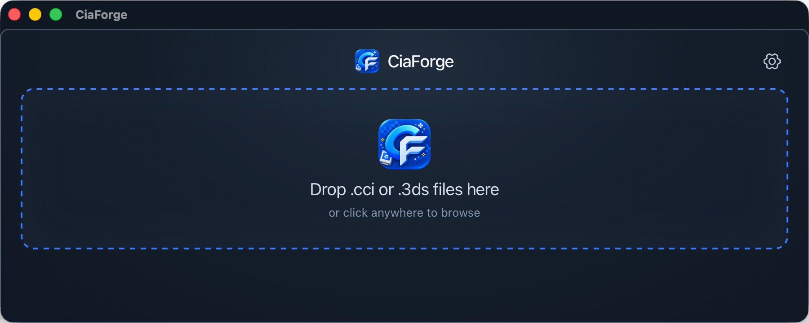
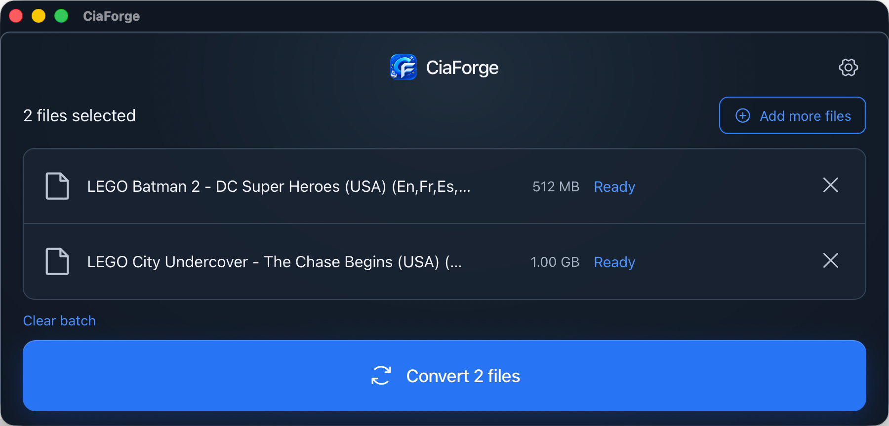

最近我用 Codex 搓了一个小桌面工具，叫 CiaForge。
事情的起点其实很简单：我从 Vimm’s Lair 下载 3DS 游戏时，拿到的通常是 .cci 或 .3ds 格式的镜像；而在 3DS 上安装时，更常用的是 .cia。现有的 Python 项目 3dsconv 能完成这件事，但它是命令行工具。
正好我也想认真看看 Tauri 能做到什么程度，于是就有了 CiaForge：用 Tauri 做跨平台桌面界面，用 Rust 重写 3dsconv 的基础转换逻辑，把原本需要在终端里完成的流程做成一个可以拖拽使用的小工具。
CiaForge 不包含游戏内容、密钥或固件资料；请只转换和安装自己有权使用的文件。

从命令行到一个顺手的窗口
3dsconv 已经把最核心的事情解决得很好：把符合条件的 3DS 镜像转换成 CIA。它也正是 CiaForge 的灵感和参考来源。
但我想要的体验更偏向日常使用：打开应用，把文件拖进去，选好输出位置，然后能直观看到每个文件的进度和结果。遇到失败时，也应该直接知道是哪一个文件、为什么失败，而不是从终端输出里翻。
所以 CiaForge 的目标并不是重新发明一个万能转换器，而是把一个很具体的使用场景收拾得更轻一点：
- 原生文件选择器，也支持把一个或多个
.cci/.3ds文件拖进窗口； - 转换队列会显示文件名、大小、状态和单文件进度；
- 可选择输出到源文件旁边，或统一输出到指定文件夹；
- 自动避开重名，不会直接覆盖已有的
.cia； - 转换成功后可以直接在 Finder 里定位结果文件。
下面是空列表时的导入界面，基本就是“拖进来，或者点一下选择文件”。

用 Tauri 做壳，用 Rust 写转换逻辑
这次我没有把 Python 命令行工具直接打包进应用里，而是让 Rust 负责转换引擎，Tauri 负责把原生能力和前端交互接起来。
这样拆下来，前端处理队列、设置和交互；Rust 侧读取镜像结构、校验 CCI / NCCH 内容、补齐 CIA 所需的元数据并写入内容记录和 SHA-256 完整性数据。Tauri 则把文件选择、拖放和“在文件管理器中显示”这类桌面能力连到一起。
转换开始后，队列会逐个执行，避免同一批任务被重复启动。每个文件的状态都能单独看，不会因为其中一个失败就让整批任务变得不清不楚。

为什么选 Tauri
以前想做一个跨平台、又带 UI 的小工具，脑子里第一个冒出来的通常就是 Electron。它生态成熟、上手也直接，但对 CiaForge 这种功能很聚焦的应用来说，打包体积确实有点重。
Tauri 这次给我的感觉很好：前端照样可以写出熟悉的界面，底层又能用 Rust 做原生逻辑，最终体积也很克制。CiaForge 这个小工具打包完成后还不到 10MB；对于一个只是想把镜像转换过程变得顺手一点的桌面应用来说，这个大小就很舒服。
当前能处理什么，不能处理什么
这里有一个很重要的边界：CiaForge 当前支持的是 .cci 和 .3ds 镜像中未加密的 NCCH 内容。
对于原始 NCCH 加密或 zero-key 加密的输入，它会明确识别并报错，不会悄悄产出一个不完整的 CIA。后面如果继续做，我也会更倾向于先把已有路径打磨稳，再看是否值得扩展更多格式和加密场景。
对我来说，这个限制并不只是“功能还没写完”。桌面工具最重要的一点，是不能让人误以为已经转换成功，最后才在设备上发现文件不能用。明确告诉用户支持范围，反而比勉强给一个看起来完成了的结果更靠谱。
这次用 Codex 的感觉
这次用 Codex 做下来，后端的转换流程反而挺顺利：把 3dsconv 的基础逻辑用 Rust 重写出来、跑通实际转换，推进得比预想快。
真正花时间的是最后的界面逻辑和样式调整。比如文件队列怎么展示、转换时哪些按钮该禁用、错误信息怎么让人一眼看明白，以及窗口尺寸变化后布局怎样保持顺手。这些看起来都是小细节，但要把它们调到自己愿意长期使用，还是来回改了不少轮。
获取与参与测试
项目源码和各平台安装包都放在 GitHub：
- GitHub: https://github.com/knktc/CiaForge
- Releases: https://github.com/knktc/CiaForge/releases
目前 CI 会分别构建 macOS Apple Silicon、macOS Intel 和 Windows 的安装包。macOS 版本暂时是 ad-hoc 签名、未公证的构建，因此第一次从网络下载后，Gatekeeper 可能会拦截或提示应用已损坏。
macOS 安装与打开方法
从 Release 下载与自己 Mac 架构匹配的 DMG，双击打开后，把 CiaForge.app 拖进 Applications。如果首次打开被 Gatekeeper 拦住，请先确认安装包来自上面的 GitHub Release，然后在终端执行：
1 | xattr -dr com.apple.quarantine "/Applications/CiaForge.app" |
第一条命令只移除 CiaForge.app 这个应用 的下载隔离属性；它不会关闭系统全局的 Gatekeeper。第二条命令会立即打开应用。之后就可以从“应用程序”中正常启动 CiaForge 了。
我目前只有一台 Apple Silicon（M 系列芯片）MacBook，因此只测试过 macOS ARM 版本。如果你有 Intel Mac 或 Windows 机器，欢迎帮忙测试对应版本；反馈时请带上系统版本、CPU 架构、CiaForge 版本和错误信息，会很有帮助。
至于 CiaForge 本身，我会继续把它当成一个“我自己真会用”的小工具来迭代：保持边界清晰、少一点麻烦、把从镜像到可安装文件这一步做得更顺手。